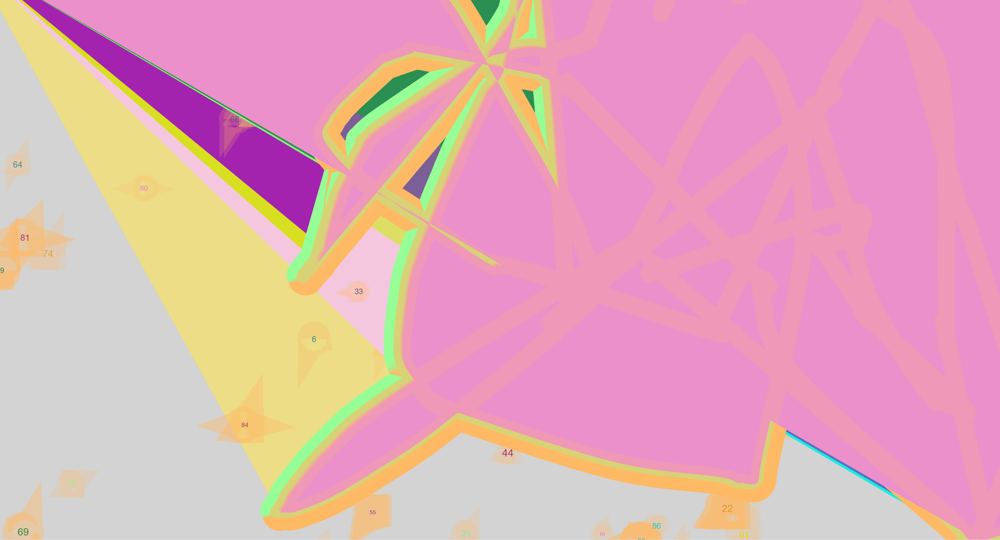
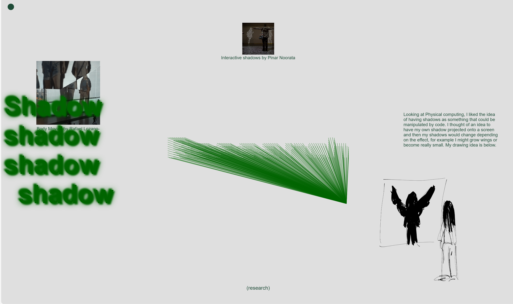
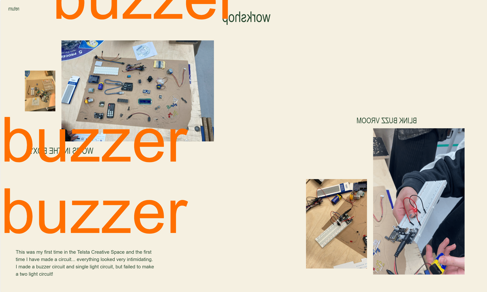
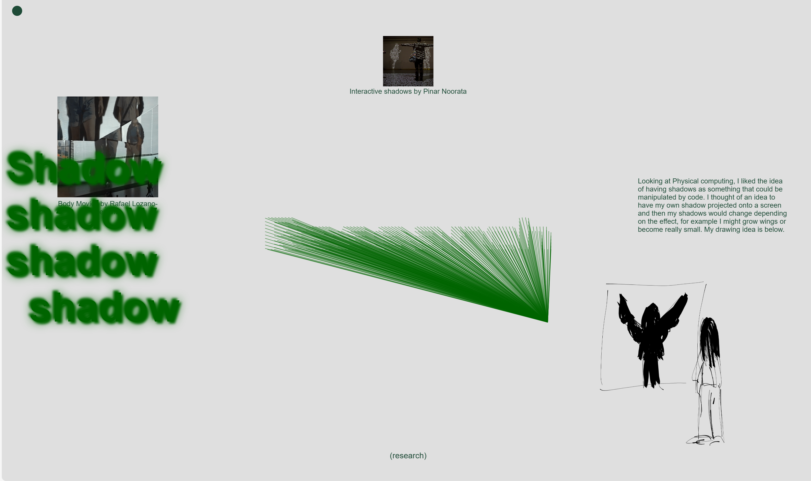
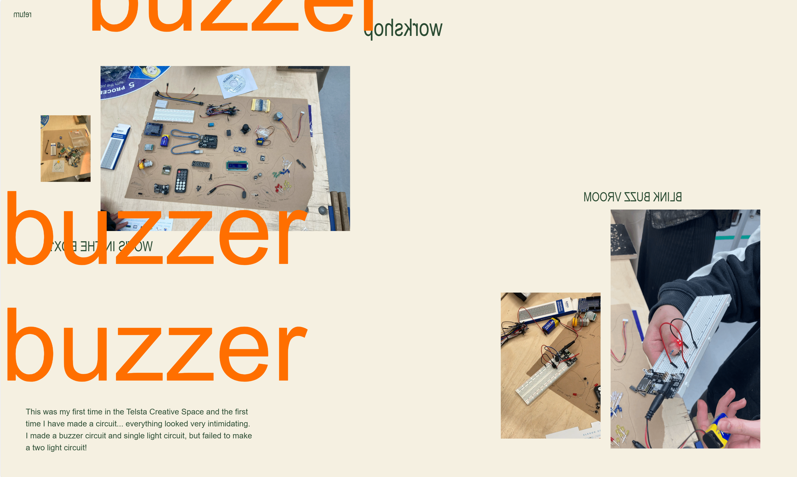

 



Process
Please drag text and images
After thinking about the theme of circuits for this week and the coming weeks, I wanted my workbook to reflect this.
So the theme is intended to have a 'wire' circuit feel, so you as the viewer can connect images and text and make
them come to life (move or vibrate or light up etc). For the cursor on each home page, I intended to create a line
that replicates a wire/wires connecting different components, and to make this I used p5js and built on the
techniques I had already learnt. The 2c home page is something I spent a lot of time designing and am happy with the result. Throughout the 2c workbook
I used chatgpt in the same way as I did in 2b, to help with modifying codes I had made in p5js already, to help with javascript
codes and effects and to help with flexboxes. All page layouts, text, design ideas are mine, I just used chatgpt to help me
bring my ideas to life and it is much faster than googling solutions everytime.
After getting feedback from workbook 2b, I wanted to continue on with the collage aesthetic from week 5.
So in 2c I am looking more at how to overlay elements, and so I used the hover effect a lot to add big text and
zoom in on images. I also learnt more Javascript codes to make more interesting moving text than before.
let path = [];
let bendStrength = 5; // How much the wire bends when clicked
let pulseSpeed = 0.02; // Speed of the pulsing effect
let pulseFactor = 0; // Factor to control the pulse
function setup() {
createCanvas(windowWidth, windowHeight);
background(211, 211, 211); // Pale grey background (solid)
noFill();
}
function draw() {
let mousePos = createVector(mouseX, mouseY);
if (mouseIsPressed) {
mousePos.x += random(-bendStrength, bendStrength);
mousePos.y += random(-bendStrength, bendStrength);
}
path.push(mousePos);
pulseFactor = sin(frameCount * pulseSpeed) * 0.5 + 0.5;
let glowAlpha = max(150, 255 * pulseFactor);
let glowWeight = 20 + pulseFactor * 30;
for (let i = 0; i < 3; i++) {
let offset = i * 2;
if (i === 0) {
stroke(150, 255, 150, glowAlpha);
} else {
stroke(255, 185, 100, glowAlpha - i * 50);
}
strokeWeight(glowWeight + i * 2);
beginShape();
for (let j = 0; j < path.length; j++) {
let p = path[j];
curveVertex(p.x + offset, p.y + offset);
}
endShape();
}
}
function mousePressed() {
path = [];
}